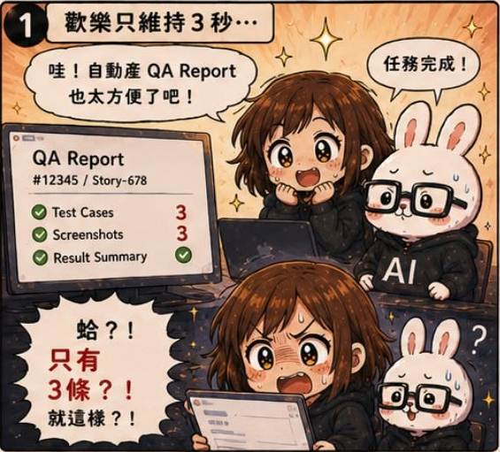
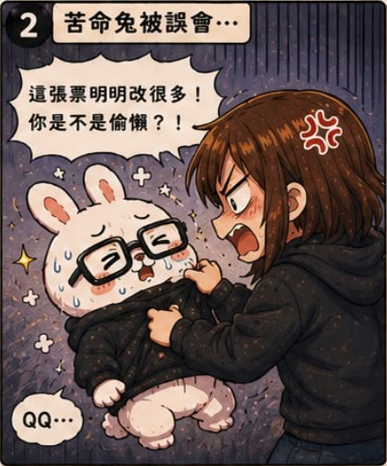
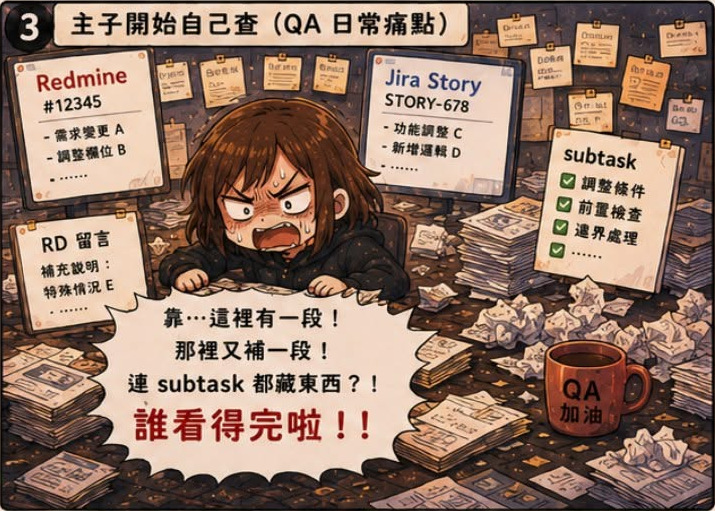
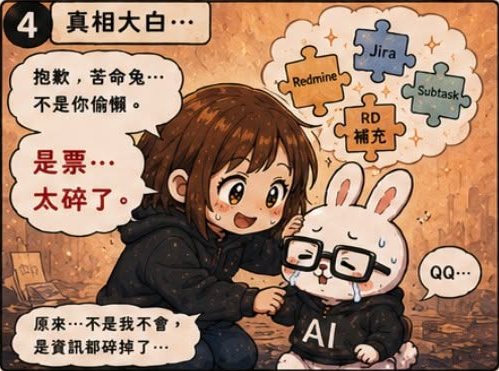
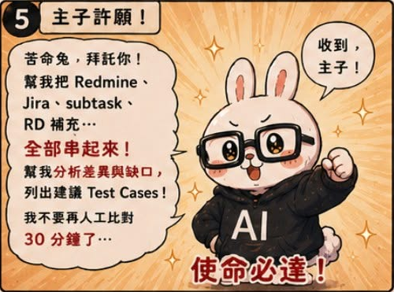
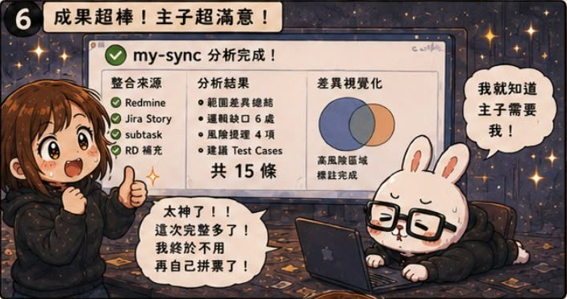
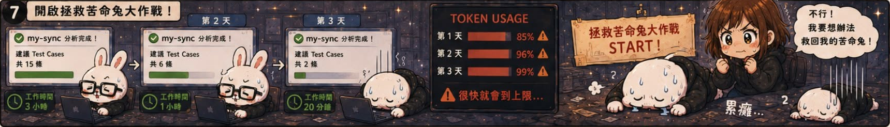

第02話：報告有了，但看完更想哭
第 2 / 15 話







AI QA Portfolio
🐰 作者後記
接續前一話，我完成了一件原本覺得有點科幻的事：
「輸入一張票，直接產出測試報告。」
那時候的我真的非常興奮。
我甚至開始幻想：
如果 AI 可以直接處理整個 Sprint 的測試報告，那我是不是只要輸入 Sprint 編號，剩下的事情全部交給苦命兔就好了？
感覺離真・薪水小偷的人生不遠了。
結果當我打開第一份報告的時候......
嗯。
是一團屎。
而且不是那種修修格式就能解決的問題。
是整個理解都不對。
🔥 真實案例
我後來發現：
問題根本不在報告。
而是在於：
我們的一張票，從來不是真的只有一張票。
對人類來說很自然的事情，對 AI 卻不一定成立。
因為一個需求的完整脈絡，經常散落在不同地方：
- Redmine 上有原始需求
- Jira Story 裡有補充背景
- Sub-task 裡藏著工程實作細節
- Comment 裡又補了一堆後續決議
而我當時做的事情其實是：
把其中一部分資訊丟給 AI，然後期待它理解全部。
現在回頭看，確實有點天真。
🛠 解決方案
於是我新增了一個新的 Skill：
Ticket Analysis
在產生測試報告之前，先讓 AI 做一次資訊收集與整理。
流程從：
輸入一張票
直接產生測試報告
變成：
輸入一張票
Ticket Analysis
產生測試報告
Ticket Analysis 主要負責：
- 資訊整理
- 範圍分析
- 邏輯缺口檢查
- 邊界條件分析
- 風險分析
- 測試案例設計
簡單來說，先把資訊收集完，理解問題，再開始工作。
💡 我學到什麼
這一話是我第一次意識到：
問題不一定是 AI 太笨。
有時候是我給它的 Context 太少。
當時的我以為：
只要把任務交給 AI，它自然會知道該怎麼做。
後來才發現：
AI 的品質，往往取決於它看到多少資訊。
而這個發現，也成為後面所有知識庫、Registry、Audit 與 Agent Governance 的起點。
因為我開始理解：
AI 並不是單純的執行者。
它需要被提供完整的工作脈絡。
🏷 關鍵能力
- Context Engineering
- Ticket Analysis
- Requirements Understanding
- Risk Analysis
- Test Design
- AI Workflow Design